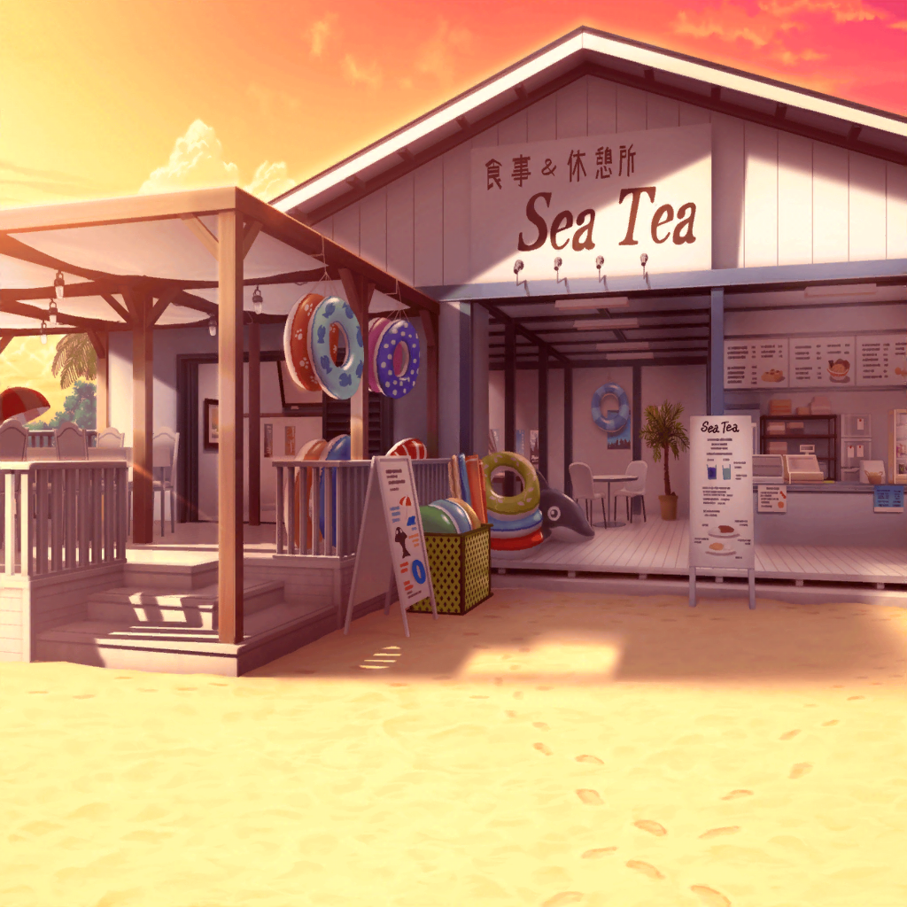

海の家
彩
ありがとうございました～！
またのご来店、お待ちしてまーす！
リサ
今ので、最後のお客さんだね。
くぅ～！ アタシ達、がんばった～！
燐子
おつかれさま……でした……
店長
みんな、ありがとう！
ごめんね、結局最後まで手伝わせちゃったな……
ひまり
いえいえっ！
お役に立ててよかったです！
店長
うん、本当に助かったよ。お礼と言ってはなんだけど、
食べたいものがあったらなんでもつくるから
遠慮なく言ってね
あこ
ホントに！？
じゃあ、あこね、焼きそばでしょ、お好み焼きでしょ、
それからかき氷っ！
リサ
アタシは、ラーメンでお願いしまーっす！
あ、クレープも追加で！
彩
みんなー、こっちこっちー！
この席が１番よく海が見えるから！
リサ
わ、すごーい！ 店内からこんなに海が見えたんだね～。
料理つくるのに必死で、全然気づかなかったよ
ひまり
あ、見て見て！
夕焼けがすごくキレイ～！
彩
えへへ、絶好の位置でしょ？
ほら、みんな座って座って！
あこ
あこ、お腹ぺこぺこー！
いただきまーす！
彩
どうぞ、召し上がれ！
みんなも、早くご飯、食べよう？
リサ
いただきまーす♪
……ん～♪ 美味しい～！
ひまり
リサ先輩って、ほんと料理上手なんですね！
ひまり
私、ホールで注文取りながら見てたんですけど
すっごいテキパキしててびっくりしちゃいました！
リサ
ええ～、そんなことないってっ。普通だよ～。
それを言うなら、ひまりだってすごかったよ？
お客さん、あんなにいたのにずっと笑顔でキビキビ働いててさ☆
ひまり
あれはなんて言うか……彩さんがたくさん
フォローしてくれたからです！ おかげで
とっても働きやすくて……えへへ、ありがとうございます！
彩
そ、そんな、別に大したことしてないよっ。
私はただ、楽しそうに働いてるあこちゃんを見てたら、
自然とがんばらなきゃって思って……
ひまり
たしかに！
あこちゃんの笑顔が、お店の雰囲気を明るくしてましたよね
あこ
ホント！？
えへへ、そんなふうにいってもらえるとうれしいな～♪
ひまり
あこちゃん、はじめてだったのにすごいね！
これならレストランとかでもバイトできちゃうよ～
リサ
でもさ、燐子もあこに負けないぐらいがんばってたよね。
アタシ、結構助けられちゃった！
ありがとね、燐子☆
燐子
……え……で、でも……わたし……わたしは……
飲みものを……つくってた、だけで……
ひまり
そのドリンクづくりが、燐子さん、どんどん早くなっていって、
運んでる私達もとっても助かりました！
リサ
最初は自信なさそうだったけどさ、
慣れたらテキパキつくって、ホントすごかったよね～♪
あこ
うんうん！
りんりんのつくったドリンク、
お客さんもすっごい喜んでたよっ！
あこ
ホワイトドラゴンのかぎ爪フロートっ！
写真よりすっごーい、って！
燐子
ほ……ホワイトドラゴンの……爪は……
やっぱり、迫力が……大事かなって思って……
燐子
（よ……よかった……わたし……
足手まといだってばかり思ってたから………
お客さんに、よろこんでもらえたんだ……）
店長
はーい、お待たせ。
クレープとかき氷、持ってきたよ
あこ
わーい、店長さん！ ありがとうございますっ！
店長
あと、燐子ちゃんには……はい、これ。
今日のお礼に。ほしかったんでしょ？
燐子
あ……限定……アイテムコード……
ど……どうして……ほしいって…………
店長
燐子ちゃんがつくったドリンクを見ていたらわかるよ。
つくるのにすごくこだわっていたし、
このゲーム、大好きなんだろうなって
あこ
すごーい、店長さん、名推理っ！
よかったね、りんりん！
燐子
う……うん……
あの……その……店長さん……
あ、ありがとう……ございます……

ビーチ
ひまり
う～ん……！
お店の中から見る夕日もキレイだったけど
外で見ると、また一段とキレイだね～！
リサ
……結局、あんまり海では遊べなかったけどさ、
これはこれでいい思い出になったよね
ひまり
はい、私もそう思います！
目いっぱい遊んだー！ って感じではなかったですけど、
みんなと一緒に働けて、とっても楽しかったですから！
あこ
あこもあこも！
お料理運ぶの、すっごい楽しかったよ！
りんりんはどうだった？？
燐子
わたしは……その……はじめてのことを……
経験できて…………
燐子
本当に……たのしかったです……
リサ
燐子……えへへ、それならよかったよ♪
彩
私もみんなに手伝ってもらえたおかげで、
とっても楽しく１日店長できました。
ありがとね！
ひまり
そだ！ それならみんな楽しかった記念で、
記念写真を撮りません？
リサ
いいね～♪
あこ
あこも、さ～んせ～い！
彩
せっかくだから、夕焼けの海をバックになんてどうかな？
ひまり
その意見、いただきです！
それじゃあ、写しますよー！
リサ
ちょっと待った！ それじゃひまりが写んないじゃん！
ほら、こうやって腕のばして撮れば……
たぶんみんな写るって！ ほら、燐子もこっちこっち！
燐子
（とっても……たのしかった……勇気、出して……
海に来て……本当に…………）
リサ
よーし、みんなもっと寄って～！
撮るよー！ はい、笑ってー